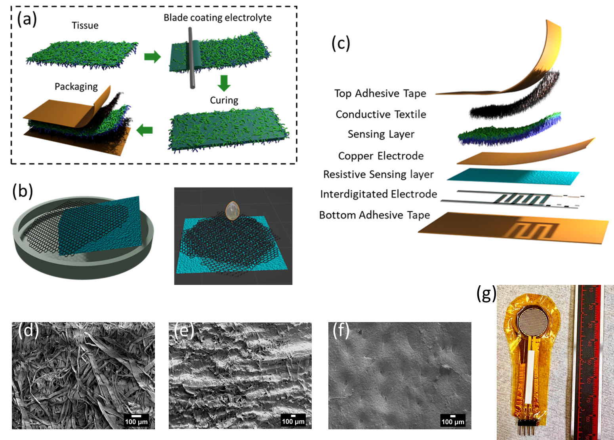
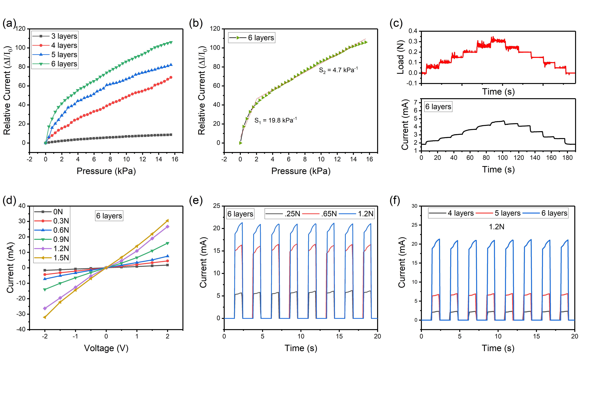

Dual-Mode Pressure Sensor
for Cardiovascular Monitoring
First-Ever Integration of Supercapacitive & Piezoresistive Sensing
📅 Period: 2023 – 2024
🧪 Key Techniques: E-beam Evaporation | Photolithography | Liquid-Assisted Transfer | Blade Coating
🎭 Role: First Author - Device fabrication, characterization, data analysis, manuscript writing
💡 Patent: Multimodal Pressure Sensor - US Patent submitted April 14, 2023


Project Overview
This research presents the first-ever dual-mode pressure sensor integrating supercapacitive (capacitive) and piezoresistive sensing mechanisms into a single multimodal device for simultaneous cardiovascular monitoring. The sensor consists of two stacked layers: a micropatterned GNP-MWCNT-based piezoresistive layer combined with a tissue paper-based supercapacitive pressure-sensing layer. This dual-mode approach enables cross-validation between signals, reduces noise artifacts, and compensates for individual modality limitations such as hysteresis (piezoresistive) or motion artifacts (capacitive) during long-term continuous monitoring.
Motivation & Gap Addressed
Cardiovascular diseases (CVDs) are the leading cause of death worldwide. While single-mode flexible pressure sensors have been developed, each modality faces inherent limitations:
- Piezoresistive sensors: Hysteresis effects
- Capacitive sensors: Susceptibility to motion artifacts
- Single-mode sensors: Performance degradation over prolonged use
This work addresses these limitations by providing two independent yet complementary data streams simultaneously, enabling cross-validation and significantly enhancing reliability for long-term continuous cardiovascular monitoring.
Fabrication Process
1. GNP-MWCNT Piezoresistive Sensing Layer
Process: GNP-MWCNT added to IPA at 0.5 mg/mL → Horn sonication 2 hours → Langmuir film formation on water → Transfer to sandpaper mold (45° angle) → Hot wind annealing (≥200°C, 5 min) → 3-6 layer deposition → PDMS drop-casting (10:1) → Cure at room temperature 1 day → Peel from mold.
Optimization: 6 layers optimal → Sensitivity: 19.8 kPa⁻¹ | Resistance: ~1 kΩ
2. Supercapacitive (Electrolytic) Sensing Layer
Process: 10% PVA in DI water stirred at 90°C for 2 hours → H₃PO₄ added (0.5-2 mL per 20 mL PVA) → Blade coating onto Kimtech tissue paper → Cured at 70°C for 15 min.
Optimization: 2 mL H₃PO₄ optimal → Sensitivity: 2.85 kPa⁻¹ (0-16 kPa) | Thickness change: 166 μm → 267 μm
3. Multimodal Sensor Assembly
Assembly: GNP-MWCNT layer on IDE (13mm diameter) → Conductive textile electrode on top → Electrolyte layer between copper tape and conductive textile → Encased in Kapton tape → Copper tape for electrical connections.
Individual Sensor Characterization
Piezoresistive Mode Optimization
Sensitivity defined as: S = (ΔI/I₀) / ΔP
| GNP-MWCNT Layers | Resistance | Sensitivity (kPa⁻¹) | Notes |
|---|---|---|---|
| 3 layers | ~7 kΩ | Low | Insufficient conductive network |
| 6 layers | ~1 kΩ | 19.8 kPa⁻¹ | Optimal sensitivity |
| >6 layers | Lower | Decreased | Current saturation |
Supercapacitive Mode Optimization
Sensitivity defined as: S = (ΔC/C₀) / ΔP
- Optimal H₃PO₄ concentration: 2 mL in 20 mL PVA (10 wt%)
- Highest sensitivity: 2.85 kPa⁻¹ (0-16 kPa range)
- Response time: 0.2 s
- Pressure resolution: 10 Pa


Integrated Sensor Performance
Sensitivity: Individual vs. Integrated
| Sensing Mode | Individual Sensor Sensitivity | Integrated Sensor Sensitivity | Loss Reason |
|---|---|---|---|
| Piezoresistive | 19.8 kPa⁻¹ | 2 kPa⁻¹ | Close packaging increases baseline |
| Supercapacitive | 2.85 kPa⁻¹ | 1 kPa⁻¹ |
Cyclic Stability
- Test Duration: 5000 cycles under 0.8N loading
- Performance: Stable with minimal degradation
- Capacitive mode variability: Greater variability due to hysteresis effects
Pulse Waveform Monitoring Results
Arterial Pulse Waveform Characteristics
An ideal pulse waveform contains three peaks:
- Systolic Peak (P₁): Ventricular contraction
- Inflection/Reflected Peak (P₂): Reflection from body's peripheries
- Diastolic Peak (P₃): Ventricular expansion
- Dicrotic Notch: Between P₂ and P₃
Key Cardiovascular Metrics:
- Augmentation Index (AIᵣ = P₂/P₁): Indicator of arterial stiffness
- Digital Volume Pulse (ΔTᴅᴠᴘ = Tᴘ₂ - Tᴘ₁): Cardiovascular well-being indicator
Pulse Waveform Collection Results
| Sensor Configuration | AIᵣ Value | Key Features Detected |
|---|---|---|
| Supercapacitive Only | 0.73 | Systolic, diastolic, inflection peaks |
| Piezoresistive Only | 0.625 | All intrinsic peaks, superior resolution |
| Multimodal (Piezoresistive mode) | 0.86 | Full waveform with all peaks |
| Multimodal (Capacitive mode) | 0.92 | Full waveform with all peaks |


Key Demonstration:
This is the first-ever demonstration of simultaneous pulse waveform collection from the same arterial location using both capacitive and piezoresistive sensing modes in an integrated device. The multimodal sensor successfully captures all intrinsic pulse waveform features from both modes simultaneously, enabling cross-validation and enhanced diagnostic accuracy.
Materials Characterization
SEM Analysis:
- Untreated tissue paper (d): Porous, spongy nature allowing easy electrolyte penetration
- Treated tissue paper (e): Impregnated with PVA-H₃PO₄, structural stability maintained
- GNP-MWCNT sensing layer (f): Irregular bump-like structure from sandpaper mold, enhancing sensitivity
Resistance Characterization:
- 3 layers GNP-MWCNT: ~7 kΩ
- 6 layers GNP-MWCNT: ~1 kΩ
Equipment Used
- JSM-FS100 Scanning Electron Microscope (SEM)
- MARK-10 ES-20 Test Stand
- MARK-10 M5-50 Force Gauge
- Keithley 2460 Sourcemeter
- Agilent 4263B Precision LCR Meter
- Custom LABVIEW GUI
- Horn Sonicator
- Oven / Hotplates
Downloads
- Manuscript Draft (PDF)
- US Patent - Multimodal Pressure Sensor (PDF)
- Supplementary Information (PDF)
- Pulse Waveform Data (Excel)
Key Innovations
- First-ever dual-mode pressure sensor integrating supercapacitive and piezoresistive mechanisms
- First simultaneous pulse waveform collection from same arterial location using both sensing modes
- Cross-validation capability enables noise reduction and compensation for individual modality limitations
- Low-cost, environmentally friendly fabrication using tissue paper and sandpaper molds
- Hierarchical structure from layer-by-layer deposition enhances sensitivity
Funding & Compliance
- National Science Foundation (NSF) PATHS-UP ERC (Award #1648451)
- NSF Awards #2126190, #2301898, #2107318
- Dissertation Year Fellowship (DYF) - Florida International University
- IRB Approval: #IRB-20-0079-AM03
Conclusion
This study successfully developed the first-ever multimodal pressure sensor combining supercapacitive and piezoresistive sensing. The individual sensors achieved excellent performance: piezoresistive sensitivity of 19.8 kPa⁻¹ and supercapacitive sensitivity of 2.85 kPa⁻¹. The integrated sensor maintained sufficient sensitivity (2 kPa⁻¹ piezoresistive, 1 kPa⁻¹ capacitive) and demonstrated stable performance over 5000 cycles. Most importantly, the multimodal sensor achieved the first-ever simultaneous pulse waveform collection from the same arterial location using both sensing modes, capturing all intrinsic pulse features. This dual-mode approach enables cross-validation, reducing noise artifacts and compensating for individual modality limitations for long-term continuous cardiovascular monitoring.